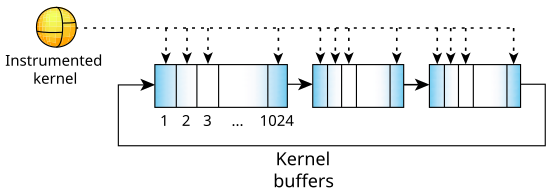

As the instrumented kernel intercepts events, it stores them in a ring of buffers.

As each buffer fills, the instrumented kernel raises an _NTO_HOOK_TRACE synthetic interrupt to notify the data-capturing program that the buffer is ready to be read.
Each buffer is of a fixed size and is divided into a fixed number of slots:
Some events are single buffer slot events (simple events
) while others are multiple buffer slot events
(combine events
). In either case there is only one event, but the number of event buffer slots required to
describe it may vary.
For details, see the
Interpreting Trace Data
chapter.